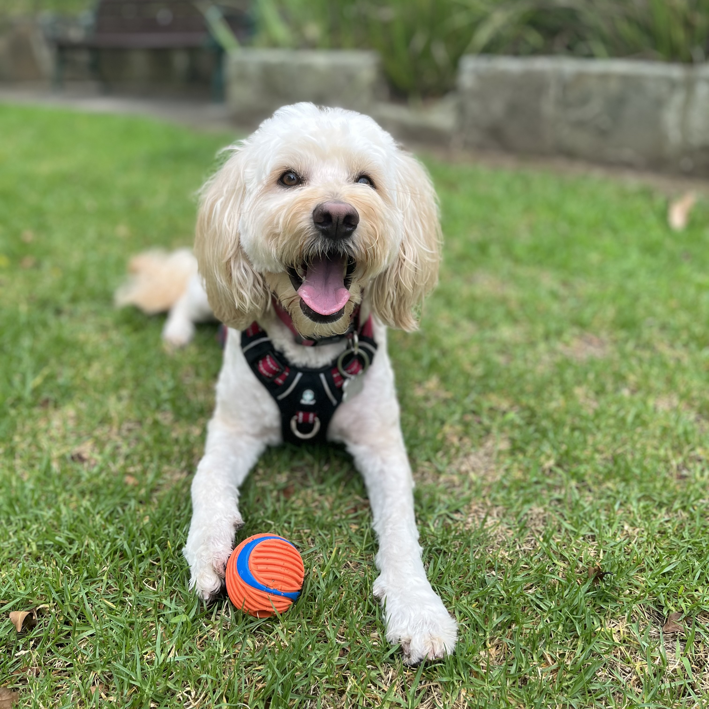

2 Exercise
Molly needs 30-45 minutes of exercise a day, usually in two 20 minute sessions, one in the morning and one in the evening. Because of her breed, she needs physical and mental exercise everyday. We usually mix up her exercise with combinations of walks, ball time, games and tricks.
2.1 Walks
Molly loves to go for walks and will do lots of sniffing and scenting. She (usually) doesn’t pull ahead on the leash but she will pull to either side to follow a smell that she likes.
Please always walk Molly on-leash.
Scavenger Molly is a bit of a scavenger on her walks and if she gets a chance she will eat things like discarded chicken bones, takeaway, or poop (cat, possum, sometimes dog).
Other dogs When out walking, Molly will usually greet other dogs in the manner they greet her: if they ignore her she will ignore them, if they give a friendly hello she will give a friendly hello, if they are aggressive, lunging or barking she will react in the same way.
2.2 Ball
Molly’s absolute favourite thing is to chase her ball. She will bring it back to you but usually likes to sit and “mind” her ball, rather than immediately give it up for another throw. She will play fetch all day, even until her hips are sore, so we always leave plenty of breaks between throws and limit the length of a fetch session to 10 minutes or so. She will quickly chew through a tennis ball so we always use the durable orange ball

Molly is very possessive of her ball so please never her let her play with her ball around other dogs. If a dog approaches her while she is “minding” her ball she will snap at the dog.
2.3 Games
Molly loves lots of games and these are a great complement to her more physical exercise (or a good substitute if it is too wet for a proper walk).
Games we play with Molly include:
- Find the toy (hide toys around the house and Molly will find them and bring them to you)
- Fetch the slippers (Molly finds the slippers and brings them to you)
- Find the treat (hide a treat in another room and let Molly sniff it out)
- Hide and seek (have Molly stay in one room then hide in another room; call her to find you)
- Tug-of-war
- Other mental stimulation e.g. lick mats and kongs
2.4 Tricks and commands
Molly knows lots of tricks and commands, and is always ready to learn more. These can be chained together in any combination for a fun exercise session. The most useful commands we use include:
- Sit
- Paw
- Down
- Down (from a distance)
- Stay
- Come
- Leave it
- On your bed/on your blankie
- Mind the house
- Hop up (jump on to a seat or bench)
- Paws up (put front paws onto a low wall, step or kerb)
- High five
- Hide
- Heel (Right: “Heel to me”; Left: “Switch sides”)
- Cheers 🍻
- No barking
- No jumping
- Tummy tax (if lying down say tummy tax and Molly will roll onto her back for tummy rubs)
- Clean the paws (after a walk say clean the paws and Molly will offer her front paws to be dried)